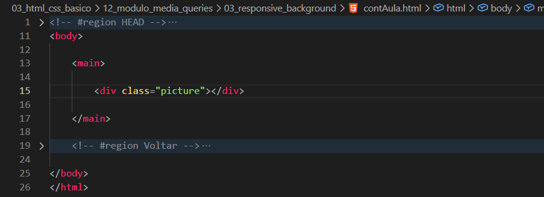
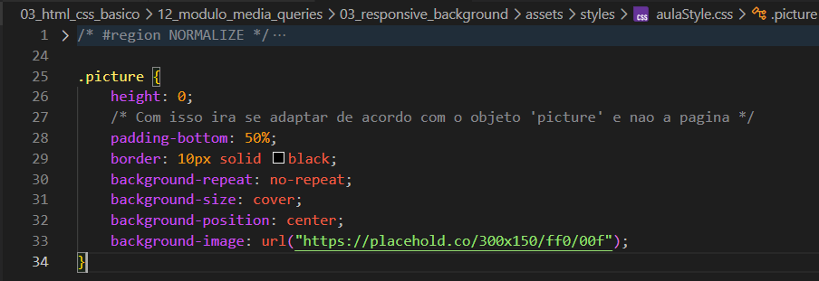

Responsive Background
Intro
Aqui iremos ver sobre, otimizacao de imagens de fundo.
Aqui iremos ver sobre, otimizacao de imagens de fundo.
HTML:

CSS:

Aqui iremos usar basicamente a mesma imagem usada anteriormente, porem usamos o padding-bottom para adaptar o tamanho de nossa imagem de acordo com o objeto e nao a pagina em si.
Conteudo da aula